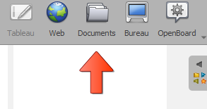

Accedere al gestore documenti
OpenBoard offre un gestore documenti. Fai clic su per aprirlo.

Crea cartelle e organizza il tuo lavoro
Crea una cartella tramite , assegnale un nome, poi trascina e rilascia i documenti al suo interno. Allo stesso modo puoi spostare un'intera cartella dentro un'altra.

Gestione delle pagine
Un documento OpenBoard puo contenere piu pagine. Dalla modalita Documenti puoi:
- Duplicare pagine
- Inviarle nel cestino
- Copiarle in un altro documento
- Creare nuove pagine a partire da una cartella di immagini